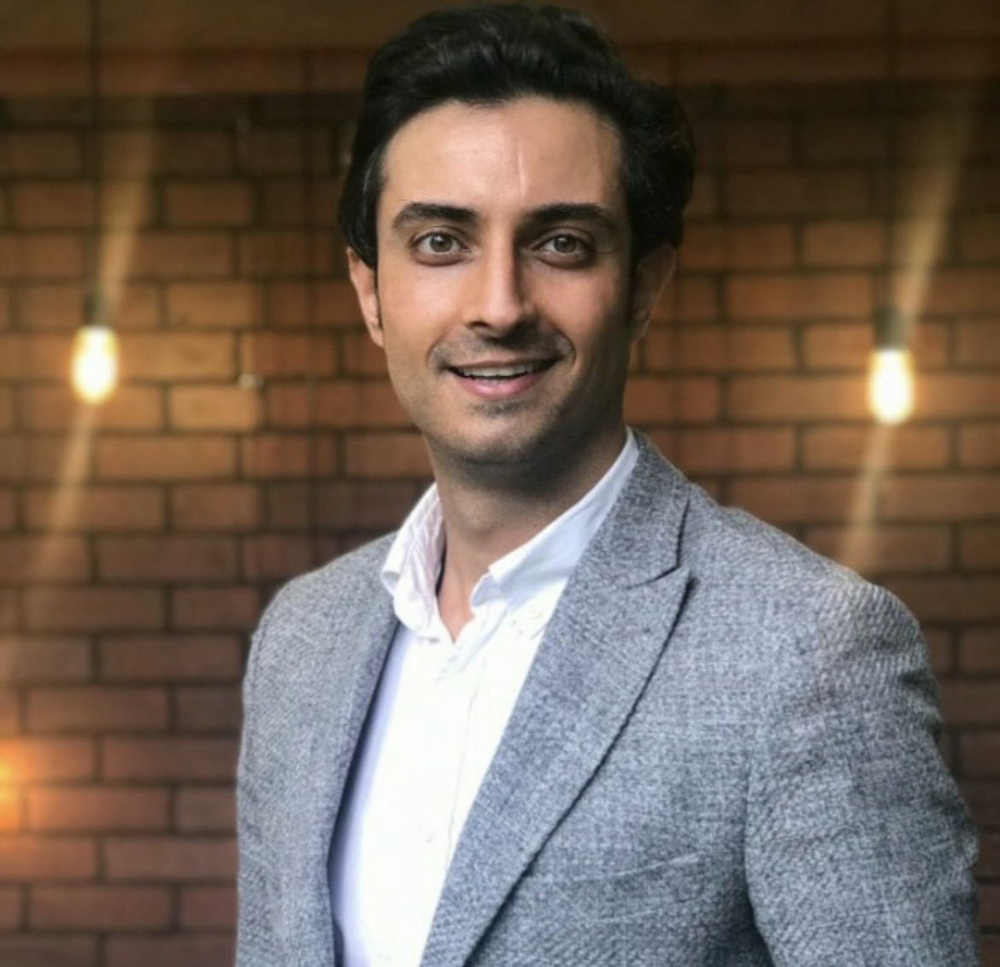

Özgün Aksüzek

Summary
Competent engineering professional offering foundation in engineering project management
and strategic planning for business cases. Detail oriented with strong knowledge of Project
Management, PMP®, PMI-ACP® and PSM I Certified.
Experience
Project Manager - Turk Telekom
Jun 2022 - Present (1 year 1 month)
- Program & Project Management Office
Technical Project Manager- IGA Istanbul Airport
May 2019 - Jun 2022 (3 year 2 month)
- Developed adaptive systems that flex to meet wide range of requests.
- Led product testing, failure investigations and corrective action planning.
- Maintained excellent attendance record, consistently arriving to work on time.
- Developed team communications and information for weekly meetings.
- Monitored social media and online sources for industry trends.
- Managed quality assurance program, including on-site evaluations, internal audits and customer
surveys.
- Rapidly identified and corrected system faults to minimize operational downtime of the systems
- Completed daily construction tasks while providing safe working conditions, staying on budget and
meeting project deadlines.
- Prepared and reviewed engineering specifications, scopes of work, schedules of payments and other
documents.
- Controlled engineering activities to maintain work standards, adhere to timelines and meet quality
assurance targets.
- Supervised implementation of SCRUM and Agile project management strategies for numerous virtualand physical servers with unique storage requirements and software stacks.
- Established and strengthened productive partnerships with external IT vendors, collaborated withproject sponsors, stakeholders, and developers, and supported teams to develop, test, deploy, andmaintain systems
- Oversaw process for selection, installation, and integration of IT vendors with current applications
Project & Special Airport System Engineer- IGA Istanbul Airport
Apr 2017 - May 2019 (2 years 2 months)
- Created electrical schematics using AutoCAD Electrical Toolset.
- Determined most effective approaches to new projects by reading and analyzing blueprints, drawingsand sketches.
- Identified specific cables, connectors, fuses, circuit breakers and other electrical devices required forinstallation of monitoring systems and weapons detection systems.
- Controlled engineering activities to maintain work standards, adhere to timelines and meet qualityassurance targets.
- Completed daily construction tasks while providing safe working conditions, staying on budget andmeeting project deadlines.
Project Engineer- Otomatica
Feb 2016 - Jul 2016 (6 months)
- Determined and scheduled priorities as required to progress engineering work.
- Gave presentations of completed work to managers.
- Double-checked documentation and work orders. Monitored installation of materials and equipment forcompliance with drawings and specifications. Answered questions for customers about various aspectsof HVAC Automation Maintenance.
- Assisted in planning site layouts and blueprints.
Software Test Engineer-
Keytorc Software Testing Services
Aug 2015 - Dec 2015 (5 months)
- Conducted regression testing, analyzed results and submitted observations to development team.
- Created accurate and efficient test scripts in Selenium & TestingWhiz to manage automated testing ofcertain products and features.
- Reviewed requirements, specifications and technical design documents to provide timely andmeaningful feedback.
Education
Yildiz Technical University
Master's degree, Business Administration and Management
2018 - 2020
Sakarya University
Bachelor's degree, Electrical and Electronic Engineer
2008 - 2014
Licenses & Certifications
Skills
- Agile Project Management
- Engineering
- Project Management Office (PMO)
- AutoCAD
- Python (Programming Language)
- HTML
- CSS
- Java CS
Contact Me